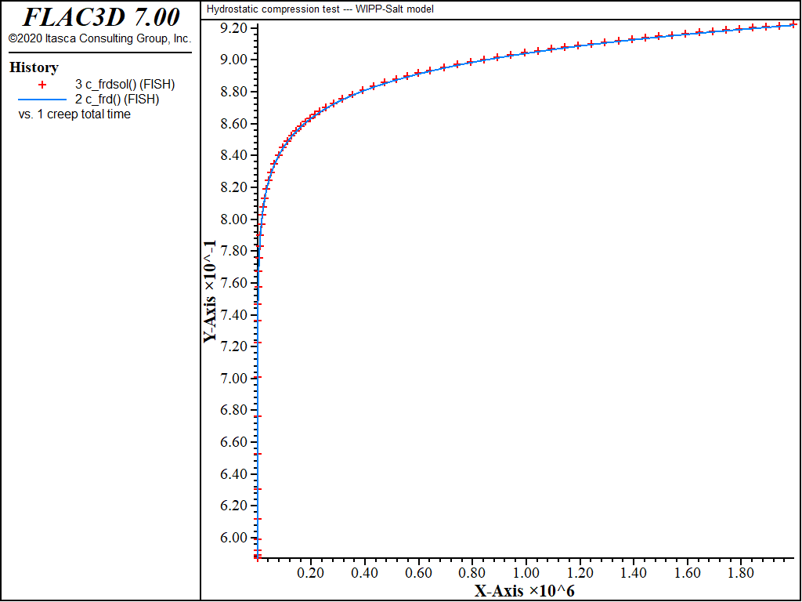

WIPP-Salt 模型：静水压缩试验
注意
要在 FLAC3D 中查看此项目，请使用菜单命令 。 选择“Creep/HydrostaticCompressionWIPPSalt”并选择“HydrostaticCompressionWIPPSalt.f3dprj”以加载。 该项目的主数据文件见本示例末尾（main data files）。
此处给出静水压缩试验的结果，以验证 FLAC3D 中的 WIPP-Salt 模型（WIPP-Salt model）。该试验涉及一个初始处于弹性平衡状态的网格单元。 让该网格单元蠕变 23 天，在此期间监测相对密度 并与解析计算进行比较。
在该静水压缩试验中，围压保持恒定。密度变化率 （见 WIPP-Salt 模型（WIPP-Salt model））为
请注意，对于该问题 \(B_0 \left[e^{-B_1 \sigma} - 1 \right]\) 为常数。
使用相对密度的定义 \(F_d = \rho / \rho_f\)（见 WIPP-Salt 模型（WIPP-Salt model）），并已知 \(t\) = 0 时 \(\rho = \rho_{\circ}\)， 对方程(1)积分可得
其中 \(\rho_f\) 为完整盐岩的密度。
同样，对 \(\dot{\epsilon}_v = -\dot{\rho}/\rho\) 积分（见 WIPP-Salt 模型（WIPP-Salt model））， 在初始应变为零的情况下可得
应力水平为 8.97 MPa 时，相对密度随蠕变时间变化的数值结果与解析计算 在 图 1（Figure 1） 中进行了比较。 初始密度为 1350 kg/m3，最终密度为 2300 kg/m3。


图 1：相对密度的数值预测与解析预测的比较。
数据文件
;------------------------------------------------------
; 静水压缩试验——WIPP-Salt 模型
;------------------------------------------------------
model new
fish automatic-create off
model title 'Hydrostatic compression test --- WIPP-Salt model'
model configure creep
; --- 几何形状 ---
zone create brick size 1 1 1 edge 5
zone face skin
program call 'parameter'
[cons]
; --- 本构模型 ---
zone cmodel assign wipp-salt
zone property bulk 0.1186e9 shear 0.0714e9 activation-energy 12000 ...
constant-a 4.56 constant-b 127 constant-d 5.79e-36 ...
creep-rate-critical 5.39e-8 exponent 4.9 temperature 300 ...
constant-gas 1.987 bulk-final [valbf] shear-final [valsf] ...
density-final [valrhof] compaction-0 [valb0] ...
compaction-1 [valb1] compaction-2 [valb2] density-salt [valrho]
; --- 边界条件 ---
zone face apply velocity-norm 0.0 range group 'Bottom'
zone face apply velocity-norm 0.0 range group 'West'
zone face apply velocity-norm 0.0 range group 'South'
zone face apply stress-norm [valsig] range group 'Top'
zone face apply stress-norm [valsig] range group 'East'
zone face apply stress-norm [valsig] range group 'North'
; --- 初始条件 ---
zone initialize density [valrho]
zone initialize stress xx [valsig] yy [valsig] zz [valsig]
; --- 历史 ---
model history creep time-total
fish history c_frd
fish history c_frdsol
fish history c_err
fish history c_ev
fish history c_evsol
fish history c_rbulk
; --- 试验 ---
model large-strain on
model creep active on
model creep timestep starting 5.e-5
model creep timestep minimum 5.e-5 maximum 500.
model solve time-total 2e6
model save 'hyd.sav'
⇐ WIPP-Drucker Model: Compression Test Showing Localization | WIPP-Salt Model: Shear Compression Test ⇒
| 这些内容对您有帮助吗？… | FLAC3D © 2019, Itasca | 原文更新于 2020 年 10 月 8 日 |